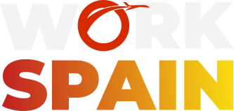
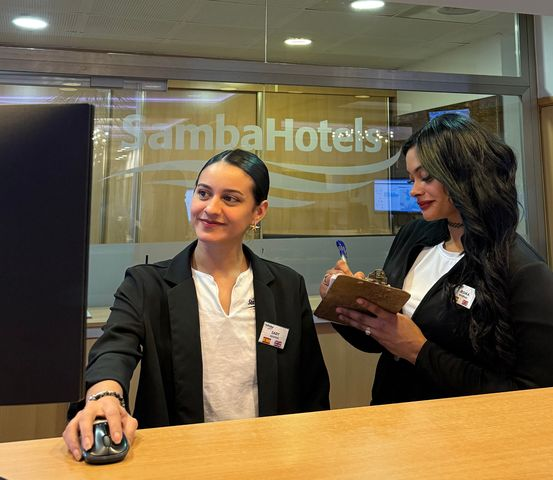
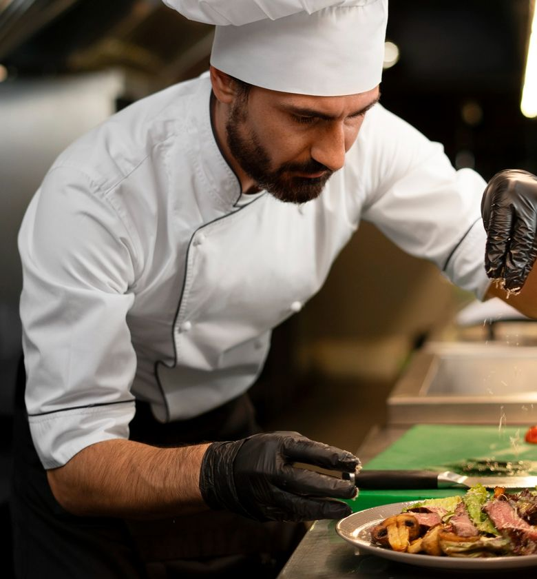
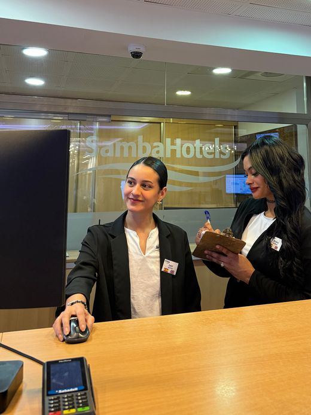
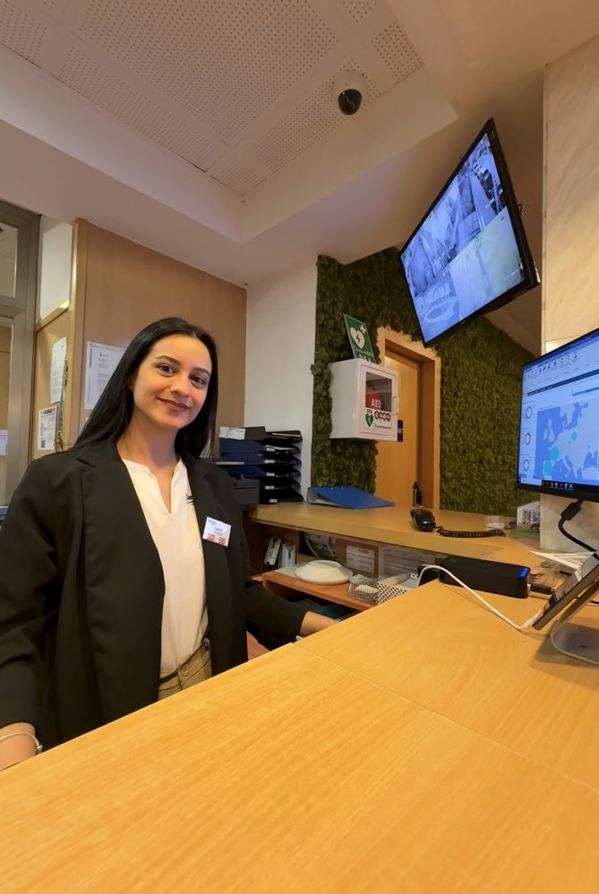
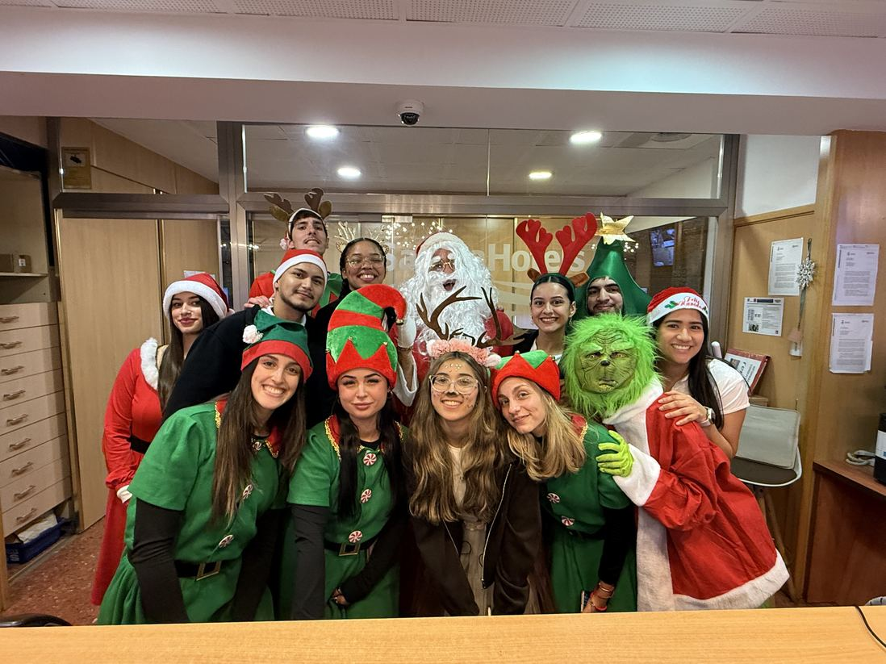
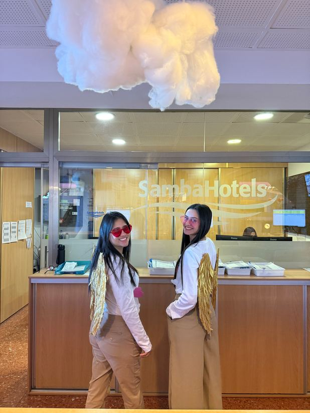
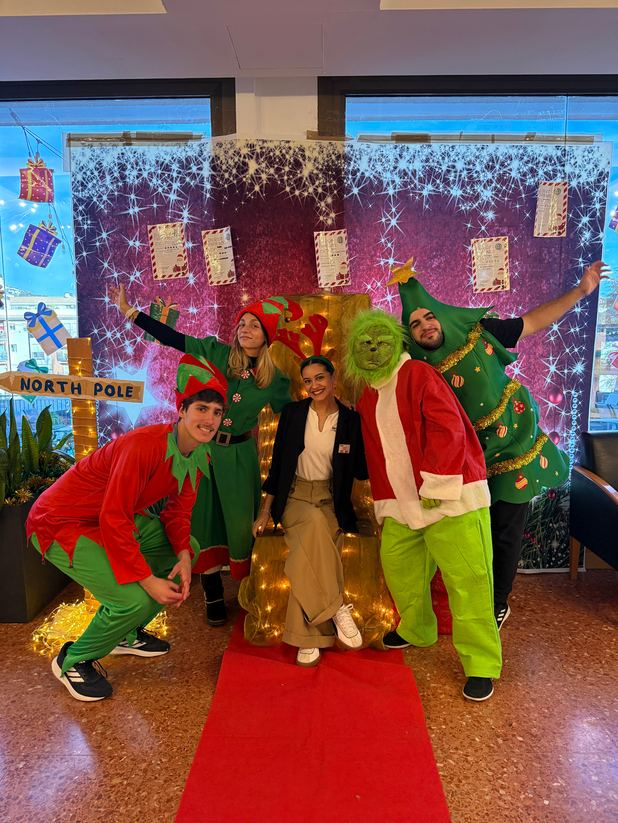
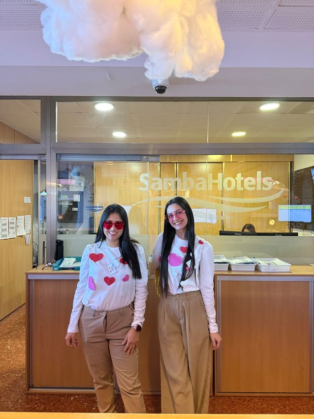

Programa de trabajo en hotelería y gastronomía en España.
Una experiencia dirigida a estudiantes y jóvenes profesionales de hotelería, gastronomía y áreas afines que buscan sumar experiencia laboral internacional en España.
Podés participar si:
- Tenés entre 18 a 35 años de edad.
- Sos estudiante o recién graduado de hotelería, gastronomía o afines.
- Si contas con una solvencia economica
desmostrable de 1.800 Euros
(para la visa de 6 meses).
Algunos puestos disponibles:
- Chef de Partie.
- Food and Beverage (Servicio y alimentación).
- Recepción (Front Desk).
- Habitaciones (Room División).
- Cocinero (Asistente de cocina).
- Garde Manager.


Fechas y lugares:
Podés aplicar en cualquier momento del año; sin embargo, sugerimos iniciar tu proceso con cuatro meses de antelación.
Nuestros destinos se extienden por toda España, abarcando tanto áreas urbanas como rurales, incluyendo las islas.
El incluye el programa:
- Empleo garantizado.
- Vivienda gratis.
- Alimentación.
- Asistencia en el visado (en caso que el programa lo requiera).


En el programa WAT España tuve la oportunidad de conocer personas de muchos países, que se convirtieron en amigos y compañeros de viajes, adaptarme a una nueva cultura, nueva gastronomía y hasta aprender un poco de otros idiomas que no me imaginaba utilizar en mi día a día como el francés y el catalán.
Además, durante el programa también pude viajar y conocer varios países de Europa, lo que hizo la experiencia aún más especial. Como estudiante de Hotelería y Turismo, me ayudó muchísimo a crecer profesionalmente, ya que pude practicar la atención al cliente y ver de cerca cómo se trabaja en el área.
Sady Azucena Cabrera📍Hotel Samba
Lloret Del Mar, Girona, España
Septiembre 2025 – Marzo 2026



